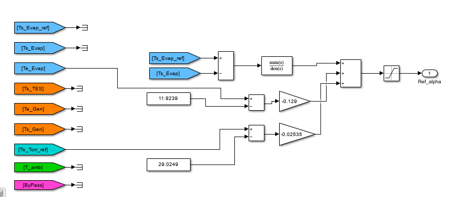

Reporte de Control: Diseño e Implementación del Controlador Proactivo (PI + Feedforward)
Tras la identificación de los modelos de planta y perturbaciones en la fase anterior (Análisis de la Semana 3), se procedió al diseño de un sistema de control capaz de regular la temperatura de salida del evaporador (\(T_{s,evap}\)) ante variaciones en la referencia (\(T_{s,evap,ref}\)) y perturbaciones externas.
🛠 1. Definición del Controlador Feedback (PI)
Para el lazo de control principal, se seleccionó un controlador Proporcional-Integral (PI) sintonizado mediante el Método Lambda (\(\lambda\)). Este método es ideal para sistemas térmicos con retardo, ya que permite ajustar la velocidad de respuesta deseada mediante un único parámetro (\(\lambda\)), garantizando una respuesta sin sobreimpulso.
📝 Fórmulas de Sintonización
Utilizando el modelo de primer orden más tiempo muerto (FOPTD) identificado: $\(G(s) = \frac{K_p}{\tau s + 1} e^{-Ls}\)$
Donde: * \(K_p\): 4.2729 * \(\tau\): 41.932 s * \(L\): 7.503 s
Las constantes del controlador se calcularon según: * Ganancia (\(K_c\)): \(K_c = \frac{1}{K_p} \cdot \frac{\tau}{\lambda + L}\) * Tiempo integral (\(T_i\)): \(T_i = \tau\)
2. Implementación y Estrategia Proactiva
El controlador se implementó en Simulink cerrando el lazo con la señal de error \(e(t) = T_{s,evap,ref} - T_{s,evap}\). Para maximizar el desempeño, se añadieron bloques de Prealimentación (Feedforward).
Compensación de Perturbaciones
El objetivo es ajustar la señal de control \(\alpha_{ref}\) basándose en la medición de las perturbaciones antes de que afecten la salida. El compensador estático se define como: $\(K_{ff} = - \frac{K_{perturbación}}{K_{planta}}\)$
- FF1 (Evaporador): Basado en \(T_{e,evap}\) con \(K_{ff1} \approx -0.129\).
- FF2 (Torre): Basado en \(T_{e,torr,ref}\) con \(K_{ff2} \approx -0.025\).
3. Análisis de Resultados: Barrido de Lambdas
Se realizó un barrido paramétrico de \(\lambda\) para observar el impacto en los índices de desempeño del concurso (IAE, TV y el índice global J).
| Parámetro \(\lambda\) | IAE | TV | R1 (Precisión) | R2 (Esfuerzo) | J (Global) | Estado |
|---|---|---|---|---|---|---|
| \(\lambda = 30\) | 731.99 | 4.55 | 1.1549 | 0.8189 | 1.0877 | Muy lento |
| \(\lambda = 20\) | 574.84 | 6.23 | 0.9070 | 1.1210 | 0.9498 | Estable |
| \(\lambda = 18\) | 560.56 | 6.53 | 0.8844 | 1.1749 | 0.9425 | Óptimo |
| \(\lambda = 17\) | 554.30 | 6.76 | 0.8746 | 1.2154 | 0.9427 | Agresivo |
| \(\lambda = 1\) | 872.53 | 51.48 | 1.3766 | 9.2544 | 2.9522 | Inestable |
Selección del Controlador Feedback
A continuación, se comparan los tres mejores candidatos para definir el control base:
| Puesto | \(\lambda\) | R1 | R2 | J Final |
|---|---|---|---|---|
| 🥉 | 15 | 0.8621 | 1.3309 | 0.9559 |
| 🥈 | 17 | 0.8746 | 1.2154 | 0.9427 |
| 🥇 | 18 | 0.8844 | 1.1749 | 0.9425 |
Conclusión: Se elige \(\lambda = 18\) debido a que ofrece el valor de \(J\) más bajo, equilibrando una alta precisión con un esfuerzo de control moderado.
4. Evolución hacia el Control Proactivo

Una vez fijado el lazo PI (\(\lambda=18\)), se integraron progresivamente las compensaciones de perturbación para observar la mejora en los índices.
| Configuración | IAE | TV | R1 | R2 | J Global |
|---|---|---|---|---|---|
| PI Solo (\(\lambda = 18\)) | 560.56 | 6.53 | 0.8844 | 1.1749 | 0.9425 |
| PI + FF1 (\(T_{e,evap}\)) | 552.79 | 6.48 | 0.8722 | 1.1653 | 0.9308 |
| PI + FF1 + FF2 (Torre) | 524.97 | 6.16 | 0.8283 | 1.1087 | 0.8844 |
Análisis de la Evolución
- Impacto de FF1: Logró reducir el error acumulado al anticipar los cambios en la temperatura de entrada del evaporador.
- Impacto de FF2: Al añadir la compensación de la torre de refrigeración, el sistema alcanzó su punto máximo de desempeño, reduciendo el IAE global significativamente.
- Sinergia: Notablemente, el uso de Feedforward múltiple no solo bajó el error (\(R1\)), sino que también redujo el esfuerzo de control (\(R2\)), indicando un sistema mucho más eficiente que el de referencia.
5. Conclusión Final
El diseño final basado en un PI con sintonía Lambda (\(\lambda=18\)) más doble compensación Feedforward arrojó un índice global de \(J = 0.8844\). Esto representa una mejora del 11.56% respecto al controlador de referencia (CR1). El sistema es robusto, suave en su accionamiento y altamente preciso ante perturbaciones de carga, cumpliendo con creces los objetivos de la Categoría 1 del CIC2026.